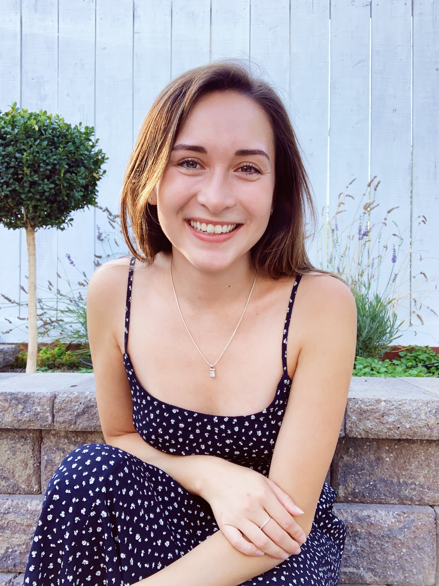
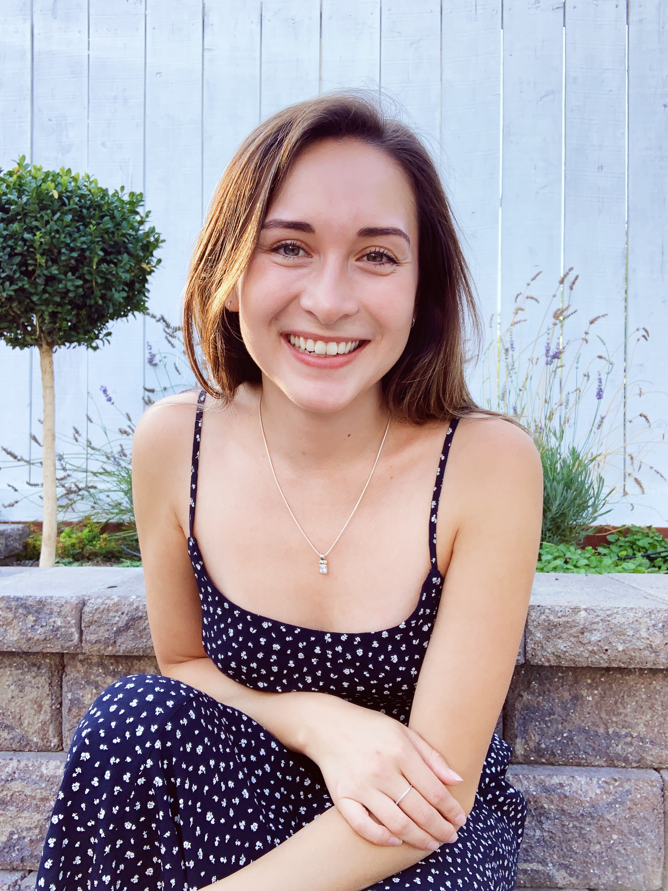

about
Hello! My name is Madison Coots and I am currently a junior at Stanford where I study Management Science & Engineering and English Literature. Before coming to college, I had always found myself torn between a desire to nurture a love for the humanities and a desire to pursue a career in engineering—so I decided to do both. I attempt to navigate the space between these disciplines, hybridizing the quantitative and the qualitative. Ultimately, I would love to have a career in project management wherein I can leverage both ways of thinking in tandem.
In my spare time, I am a shameless plant enthusiast with a collection of almost thirty houseplants (and growing). In my eyes, there’s nothing more relaxing than making a new terranium. When I’m not watering my plants, I do enjoy a cup of tea and a good read—Oscar Wilde is my favorite.
Thanks for stopping by!
All the best,
 
